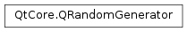

QRandomGenerator¶
Inherited by: QRandomGenerator64
Note
This class was introduced in Qt 5.10.
Detailed Description¶
The
PySide2.QtCore.QRandomGeneratorclass allows one to obtain random values from a high-quality Random Number Generator.
PySide2.QtCore.QRandomGeneratormay be used to generate random values from a high-quality random number generator. Like the C++ random engines,PySide2.QtCore.QRandomGeneratorcan be seeded with user-provided values through the constructor. When seeded, the sequence of numbers generated by this class is deterministic. That is to say, given the same seed data,PySide2.QtCore.QRandomGeneratorwill generate the same sequence of numbers. But given different seeds, the results should be considerably different.
QRandomGenerator.securelySeeded()can be used to create aPySide2.QtCore.QRandomGeneratorthat is securely seeded withQRandomGenerator.system(), meaning that the sequence of numbers it generates cannot be easily predicted. Additionally,QRandomGenerator.global()returns a global instance ofPySide2.QtCore.QRandomGeneratorthat Qt will ensure to be securely seeded. This object is thread-safe, may be shared for most uses, and is always seeded fromQRandomGenerator.system()
QRandomGenerator.system()may be used to access the system’s cryptographically-safe random generator. On Unix systems, it’s equivalent to reading from/dev/urandomor thegetrandom()orgetentropy()system calls.The class can generate 32-bit or 64-bit quantities, or fill an array of those. The most common way of generating new values is to call the
PySide2.QtCore.QRandomGenerator.generate(),PySide2.QtCore.QRandomGenerator.generate64()orfillRange()functions. One would use it as:quint32 value = QRandomGenerator::global()->generate();Additionally, it provides a floating-point function
PySide2.QtCore.QRandomGenerator.generateDouble()that returns a number in the range [0, 1) (that is, inclusive of zero and exclusive of 1). There’s also a set of convenience functions that facilitate obtaining a random number in a bounded, integral range.
Seeding and determinism¶
PySide2.QtCore.QRandomGeneratormay be seeded with specific seed data. When that is done, the numbers generated by the object will always be the same, as in the following example:QRandomGenerator prng1(1234), prng2(1234); Q_ASSERT(prng1.generate32() == prng2.generate32()); Q_ASSERT(prng1.generate64() == prng2.generate64());The seed data takes the form of one or more 32-bit words. The ideal seed size is approximately equal to the size of the
PySide2.QtCore.QRandomGeneratorclass itself. Due to mixing of the seed data,PySide2.QtCore.QRandomGeneratorcannot guarantee that distinct seeds will produce different sequences.
QRandomGenerator.global(), like all generators created byQRandomGenerator.securelySeeded(), is always seeded fromQRandomGenerator.system(), so it’s not possible to make it produce identical sequences.
Bulk data¶
When operating in deterministic mode,
PySide2.QtCore.QRandomGeneratormay be used for bulk data generation. In fact, applications that do not need cryptographically-secure or true random data are advised to use a regularPySide2.QtCore.QRandomGeneratorinstead ofQRandomGenerator.system()for their random data needs.For ease of use,
PySide2.QtCore.QRandomGeneratorprovides a global object that can be easily used, as in the following example:int x = QRandomGenerator::global()->generate32(); int y = QRandomGenerator::global()->generate32(); int w = QRandomGenerator::global()->bounded(16384); int h = QRandomGenerator::global()->bounded(16384);
System-wide random number generator¶
QRandomGenerator.system()may be used to access the system-wide random number generator, which is cryptographically-safe on all systems that Qt runs on. This function will use hardware facilities to generate random numbers where available. On such systems, those facilities are true Random Number Generators. However, if they are true RNGs, those facilities have finite entropy sources and thus may fail to produce any results if their entropy pool is exhausted.If that happens, first the operating system then
PySide2.QtCore.QRandomGeneratorwill fall back to Pseudo Random Number Generators of decreasing qualities (Qt’s fallback generator being the simplest). Whether those generators are still of cryptographic quality is implementation-defined. Therefore,QRandomGenerator.system()should not be used for high-frequency random number generation, lest the entropy pool become empty. As a rule of thumb, this class should not be called upon to generate more than a kilobyte per second of random data (note: this may vary from system to system).If an application needs true RNG data in bulk, it should use the operating system facilities (such as
/dev/randomon Linux) directly and wait for entropy to become available. If the application requires PRNG engines of cryptographic quality but not of true randomness,QRandomGenerator.system()may still be used (see section below).If neither a true RNG nor a cryptographically secure PRNG are required, applications should instead use PRNG engines like
PySide2.QtCore.QRandomGenerator‘s deterministic mode and those from the C++ Standard Library.QRandomGenerator.system()can be used to seed those.
Fallback quality¶
QRandomGenerator.system()uses the operating system facilities to obtain random numbers, which attempt to collect real entropy from the surrounding environment to produce true random numbers. However, it’s possible that the entropy pool becomes exhausted, in which case the operating system will fall back to a pseudo-random engine for a time. Under no circumstances willQRandomGenerator.system()block, waiting for more entropy to be collected.The following operating systems guarantee that the results from their random-generation API will be of at least cryptographically-safe quality, even if the entropy pool is exhausted: Apple OSes (Darwin), BSDs, Linux, Windows. Barring a system installation problem (such as
/dev/urandomnot being readable by the current process),QRandomGenerator.system()will therefore have the same guarantees.On other operating systems,
PySide2.QtCore.QRandomGeneratorwill fall back to a PRNG of good numeric distribution, but it cannot guarantee proper seeding in all cases. Please consult the OS documentation for more information.Applications that require
PySide2.QtCore.QRandomGeneratornot to fall back to non-cryptographic quality generators are advised to check their operating system documentation or restrict their deployment to one of the above.
Reentrancy and thread-safety¶
PySide2.QtCore.QRandomGeneratoris reentrant, meaning that multiple threads can operate on this class at the same time, so long as they operate on different objects. If multiple threads need to share one PRNG sequence, external locking by a mutex is required.The exceptions are the objects returned by
QRandomGenerator.global()andQRandomGenerator.system(): those objects are thread-safe and may be used by any thread without external locking. Note that thread-safety does not extend to copying those objects: they should always be used by reference.
Standard C++ Library compatibility¶
PySide2.QtCore.QRandomGeneratoris modeled after the requirements for random number engines in the C++ Standard Library and may be used in almost all contexts that the Standard Library engines can. Exceptions to the requirements are the following:
PySide2.QtCore.QRandomGeneratordoes not support seeding from another seed sequence-like class besides std::seed_seq itself;PySide2.QtCore.QRandomGeneratoris not comparable (but is copyable) or streamable tostd::ostreamor fromstd::istream.
PySide2.QtCore.QRandomGeneratoris also compatible with the uniform distribution classesstd::uniform_int_distributionandstd:uniform_real_distribution, as well as the free functionstd::generate_canonical. For example, the following code may be used to generate a floating-point number in the range [1, 2.5):std::uniform_real_distribution dist(1, 2.5); return dist(*QRandomGenerator::global());See also
-
class
PySide2.QtCore.QRandomGenerator(other)¶ -
class
PySide2.QtCore.QRandomGenerator(begin, end) -
class
PySide2.QtCore.QRandomGenerator([seedValue=1]) Parameters: - begin –
PySide2.QtCore.quint32 - other –
PySide2.QtCore.QRandomGenerator - end –
PySide2.QtCore.quint32 - seedValue –
PySide2.QtCore.quint32
Creates a copy of the generator state in the
otherobject. IfotherisQRandomGenerator.system()or a copy of that, this object will also read from the operating system random-generating facilities. In that case, the sequences generated by the two objects will be different.In all other cases, the new
PySide2.QtCore.QRandomGeneratorobject will start at the same position in the deterministic sequence as theotherobject was. Both objects will generate the same sequence from this point on.For that reason, it is not adviseable to create a copy of
QRandomGenerator.global(). If one needs an exclusive deterministic generator, consider instead usingPySide2.QtCore.QRandomGenerator.securelySeeded()to obtain a new object that shares no relationship with theQRandomGenerator.global().This is an overloaded function.
Initializes this
PySide2.QtCore.QRandomGeneratorobject with the values found in the range frombegintoendas the seed. Two objects constructed or reseeded with the same seed value will produce the same number sequence.This constructor is equivalent to:
std::seed_seq sseq(begin, end); QRandomGenerator generator(sseq);
Initializes this
PySide2.QtCore.QRandomGeneratorobject with the valueseedValueas the seed. Two objects constructed or reseeded with the same seed value will produce the same number sequence.- begin –
-
PySide2.QtCore.QRandomGenerator.bounded(lowest, highest)¶ Parameters: - lowest –
PySide2.QtCore.quint32 - highest –
PySide2.QtCore.quint32
Return type: PySide2.QtCore.quint32This is an overloaded function.
Generates one random 32-bit quantity in the range between
lowest(inclusive) andhighest(exclusive). The same result may also be obtained by usingstd::uniform_int_distributionwith parameterslowestand\a highest - 1. That class can also be used to obtain quantities larger than 32 bits.For example, to obtain a value between 1000 (incl.) and 2000 (excl.), one would write:
quint32 v = QRandomGenerator::bounded(1000, 2000);
Note that this function cannot be used to obtain values in the full 32-bit range of quint32. Instead, use
PySide2.QtCore.QRandomGenerator.generate().- lowest –
-
PySide2.QtCore.QRandomGenerator.bounded(highest) Parameters: highest – PySide2.QtCore.quint32Return type: PySide2.QtCore.quint32This is an overloaded function.
Generates one random 32-bit quantity in the range between 0 (inclusive) and
highest(exclusive). The same result may also be obtained by usingstd::uniform_int_distributionwith parameters 0 andhighest - 1. That class can also be used to obtain quantities larger than 32 bits.For example, to obtain a value between 0 and 255 (inclusive), one would write:
quint32 v = QRandomGenerator::bounded(256);
Naturally, the same could also be obtained by masking the result of
PySide2.QtCore.QRandomGenerator.generate()to only the lower 8 bits. Either solution is as efficient.Note that this function cannot be used to obtain values in the full 32-bit range of quint32. Instead, use
PySide2.QtCore.QRandomGenerator.generate().
-
PySide2.QtCore.QRandomGenerator.bounded(highest) Parameters: highest – PySide2.QtCore.intReturn type: PySide2.QtCore.intThis is an overloaded function.
Generates one random 32-bit quantity in the range between 0 (inclusive) and
highest(exclusive).highestmust not be negative.Note that this function cannot be used to obtain values in the full 32-bit range of int. Instead, use
PySide2.QtCore.QRandomGenerator.generate()and cast to int.
-
PySide2.QtCore.QRandomGenerator.bounded(lowest, highest) Parameters: - lowest –
PySide2.QtCore.int - highest –
PySide2.QtCore.int
Return type: PySide2.QtCore.intThis is an overloaded function.
Generates one random 32-bit quantity in the range between
lowest(inclusive) andhighest(exclusive), both of which may be negative.Note that this function cannot be used to obtain values in the full 32-bit range of int. Instead, use
PySide2.QtCore.QRandomGenerator.generate()and cast to int.- lowest –
-
PySide2.QtCore.QRandomGenerator.bounded(highest) Parameters: highest – PySide2.QtCore.doubleReturn type: PySide2.QtCore.doubleGenerates one random double in the range between 0 (inclusive) and
highest(exclusive). This function is equivalent to and is implemented as:return generateDouble() * highest;
-
PySide2.QtCore.QRandomGenerator.discard(z)¶ Parameters: z – long Discards the next
zentries from the sequence. This method is equivalent to callingPySide2.QtCore.QRandomGenerator.generate()ztimes and discarding the result, as in:while (z--) generator.generate();
-
PySide2.QtCore.QRandomGenerator.generate(begin, end)¶ Parameters: - begin –
PySide2.QtCore.quint32 - end –
PySide2.QtCore.quint32
This is an overloaded function.
Same as the other overload, but more efficiently fills
begintoend.- begin –
-
PySide2.QtCore.QRandomGenerator.generate() Return type: PySide2.QtCore.quint32Generates a 32-bit random quantity and returns it.
See also
operator()()PySide2.QtCore.QRandomGenerator.generate64()
-
PySide2.QtCore.QRandomGenerator.generate64()¶ Return type: PySide2.QtCore.quint64Generates a 64-bit random quantity and returns it.
See also
operator()()PySide2.QtCore.QRandomGenerator.generate()
-
PySide2.QtCore.QRandomGenerator.generateDouble()¶ Return type: PySide2.QtCore.doubleGenerates one random qreal in the canonical range [0, 1) (that is, inclusive of zero and exclusive of 1).
This function is equivalent to:
QRandomGenerator64 rd; return std::generate_canonical<qreal, std::numeric_limits<qreal>::digits>(rd);
The same may also be obtained by using
std::uniform_real_distributionwith parameters 0 and 1.
-
static
PySide2.QtCore.QRandomGenerator.global_()¶ Return type: PySide2.QtCore.QRandomGeneratorReturns a pointer to a shared
PySide2.QtCore.QRandomGeneratorthat was seeded usingPySide2.QtCore.QRandomGenerator.securelySeeded(). This function should be used to create random data without the expensive creation of a securely-seededPySide2.QtCore.QRandomGeneratorfor a specific use or storing the rather largePySide2.QtCore.QRandomGeneratorobject.For example, the following creates a random RGB color:
return QColor::fromRgb(QRandomGenerator::global()->generate());
Accesses to this object are thread-safe and it may therefore be used in any thread without locks. The object may also be copied and the sequence produced by the copy will be the same as the shared object will produce. Note, however, that if there are other threads accessing the global object, those threads may obtain samples at unpredictable intervals.
-
static
PySide2.QtCore.QRandomGenerator.max()¶ Return type: long Returns the maximum value that
PySide2.QtCore.QRandomGeneratormay ever generate. That is,std::numeric_limits<result_type>::max().See also
PySide2.QtCore.QRandomGenerator.min()QRandomGenerator64.max()
-
static
PySide2.QtCore.QRandomGenerator.min()¶ Return type: long Returns the minimum value that
PySide2.QtCore.QRandomGeneratormay ever generate. That is, 0.See also
PySide2.QtCore.QRandomGenerator.max()QRandomGenerator64.min()
-
static
PySide2.QtCore.QRandomGenerator.securelySeeded()¶ Return type: PySide2.QtCore.QRandomGeneratorReturns a new
PySide2.QtCore.QRandomGeneratorobject that was securely seeded withQRandomGenerator.system(). This function will obtain the ideal seed size for the algorithm thatPySide2.QtCore.QRandomGeneratoruses and is therefore the recommended way for creating a newPySide2.QtCore.QRandomGeneratorobject that will be kept for some time.Given the amount of data required to securely seed the deterministic engine, this function is somewhat expensive and should not be used for short-term uses of
PySide2.QtCore.QRandomGenerator(using it to generate fewer than 2600 bytes of random data is effectively a waste of resources). If the use doesn’t require that much data, consider usingQRandomGenerator.global()and not storing aPySide2.QtCore.QRandomGeneratorobject instead.See also
-
PySide2.QtCore.QRandomGenerator.seed([s=1])¶ Parameters: s – PySide2.QtCore.quint32Reseeds this object using the value
seedas the seed.
-
static
PySide2.QtCore.QRandomGenerator.system()¶ Return type: PySide2.QtCore.QRandomGeneratorReturns a pointer to a shared
PySide2.QtCore.QRandomGeneratorthat always uses the facilities provided by the operating system to generate random numbers. The system facilities are considered to be cryptographically safe on at least the following operating systems: Apple OSes (Darwin), BSDs, Linux, Windows. That may also be the case on other operating systems.They are also possibly backed by a true hardware random number generator. For that reason, the
PySide2.QtCore.QRandomGeneratorreturned by this function should not be used for bulk data generation. Instead, use it to seedPySide2.QtCore.QRandomGeneratoror a random engine from the <random> header.The object returned by this function is thread-safe and may be used in any thread without locks. It may also be copied and the resulting
PySide2.QtCore.QRandomGeneratorwill also access the operating system facilities, but they will not generate the same sequence.See also
© 2018 The Qt Company Ltd. Documentation contributions included herein are the copyrights of their respective owners. The documentation provided herein is licensed under the terms of the GNU Free Documentation License version 1.3 as published by the Free Software Foundation. Qt and respective logos are trademarks of The Qt Company Ltd. in Finland and/or other countries worldwide. All other trademarks are property of their respective owners.